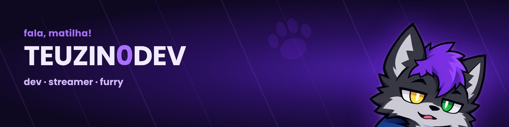
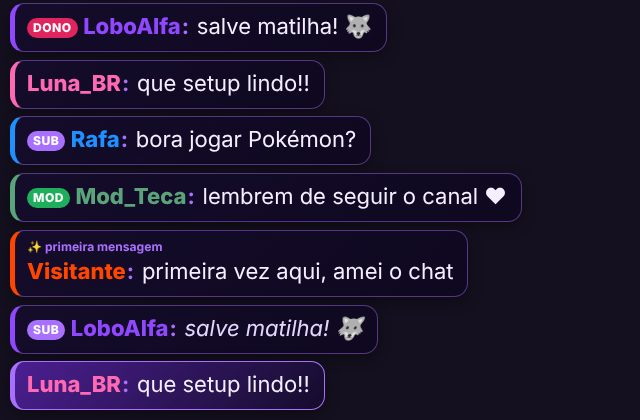

Oi, eu sou o Matheus
Desenvolvedor front-end · streamer · criador de ferramentas para lives
Programo com foco em front-end e faço transmissões na Twitch. Boa parte do que construo nasce de uma necessidade real do meu canal e depois é aberta para outros streamers usarem de graça.
O Teyo, minha sona, é a identidade visual do canal e da comunidade, a matilha.
- JavaScript
- TypeScript
- React
- Next.js
- Node.js
- Python
- C#
- Java
FATECgraduando em Desenvolvimento de Software Multiplataforma
Open sourceferramentas gratuitas para streamers
Twitchlives de jogos, bate-papo e programação
Projetos em destaque
 Recadino Pix do público vira recado na live
Recadino Pix do público vira recado na live

TeuzinBetterChatchat bonito pro OBS, com fotos OverlayKitmonte seu overlay arrastando
OverlayKitmonte seu overlay arrastando
 Expedição Abissaljogo de submarino pro chat da live
Expedição Abissaljogo de submarino pro chat da live